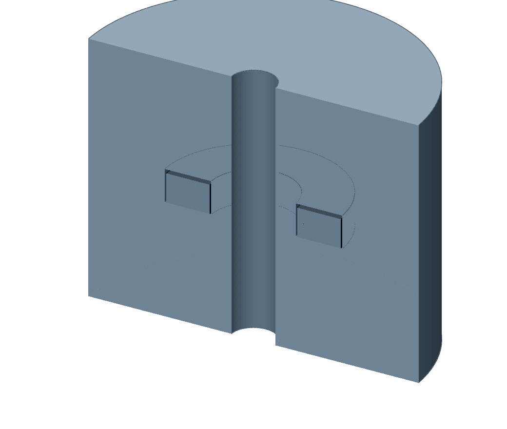

The plastic
It prints lighter than it feeds.
ASA Aero foams when it is heated. It swells in the nozzle, so the printer feeds about half the plastic of an ordinary line and the foam makes up the rest.
Seen in Bambu ASA Aero · Mark2 · glued Engineering plate · right 0.4 mm hardened nozzleNot tried in: Mark 1
The recipe
Read from the float’s project file as this book is bound. The filament settings are the maker’s stock profile for this printer. The walls are ours (see the third page).
| Nozzle, right side | hardened, {{aero:/nozzle_diameter/1}} mm, {{aero:/nozzle_temperature/0}} °C |
|---|---|
| Plate | {{aeroflight:/bed}}, {{aero:/eng_plate_temp/0}} °C |
| Chamber | {{aero:/chamber_temperatures/0}} °C, door shut |
| Flow ratio | {{aero:/filament_flow_ratio/0}} |
| Layer, line | {{aero:/layer_height}} mm high, {{aero:/line_width}} mm wide |
| Wall loops | {{aero:/wall_loops}} |
| Fill, top skin, bottom skin | {{aero:/sparse_infill_density}}, {{aero:/top_shell_layers}}, {{aero:/bottom_shell_layers}} |
| Part fan | {{aero:/fan_min_speed/0}} to {{aero:/fan_max_speed/0}} % |
| Most plastic a second | {{aero:/filament_max_volumetric_speed/0}} mm³ |
| First-layer trim on Mark2 | +{{aeroflight:/requested_z_trim_mm}} mm |
Why the floats are foam
A level float rides in the carbonator and in each flavor reservoir, and it has to float while carrying a magnet. Solid PETG and PET-GF both sink. The float was first drawn as a foam core sealed inside a clear PETG shell, and the first night’s prints were that core. The next day it became foam and nothing else.
“…starting simpler seems better to me, generally speaking.”

123The bore. It slides on a rod.
A ring magnet, read through the tank wall.
Foam above and below, in one piece.
What it needed, found in one night
Mark2, from 22:20 on 2 October 2026. Seven starts in about three hours; the seventh, which Derek started at the printer, ran to the end.
A smooth plate with glue. Five starts on textured PEI, the plate PET-GF prints on. Of the first: “It did, eventually, adhere to the bed, after more layers were added, but then it peeled off *very* easily.” Before the sixth: “Engineering plate is glued and loaded now. Textured plate is a no go.”
A head start. The printer’s own short start line “does not adhere to the bed at all. It just raises right up,” and was dragged into the part. From the fourth start on, a strip of {{aerostrip:/priming_strip_review/rows}} passes in the front corner prints first.
A dry box. Dried at {{aerodry:/sources/0/official_parameters/forced_air_drying_temperature_c}} °C for {{aerodry:/sources/0/official_parameters/forced_air_drying_duration_h}} hours and kept under {{aerodry:/sources/0/official_parameters/printing_and_storage_rh_percent_max_exclusive}} % humidity, the maker’s figures. The first six starts fed from the AMS HT. Of the seventh: “…we are now using the polymaker drybox and that is working better.”
Still openThe strip, the plate and the dry box arrived on three starts in a row, and only the last of them ran to the end, so the record cannot say what each one did. Nothing about the finished foam has been measured. The float is sized on an assumed {{aerodesign:/sizing/design_foam_density_g_cc}} g/cm³, for {{aerodesign:/sizing/minimum_reserve_lift_g}} g of spare lift with its {{aerodesign:/magnet/mass_g}} g magnet aboard. None has been weighed, floated or soaked on the record.
In the record
The float’s sums · The maker’s figures · The first start · The start line · The plate · The print that finished · Drying